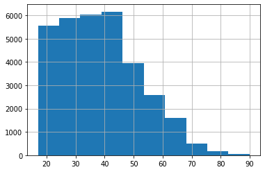
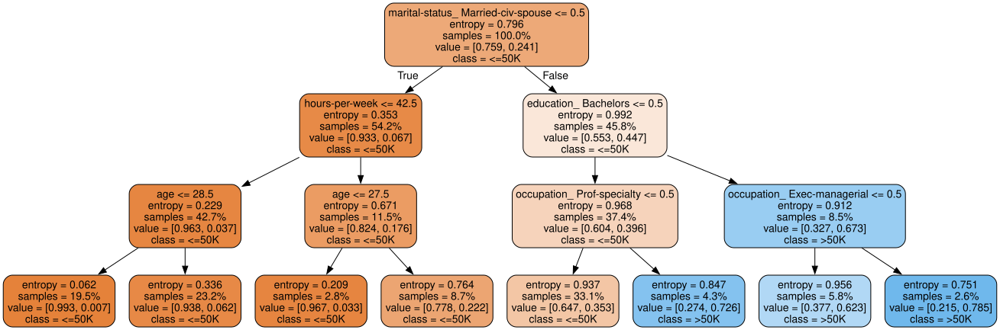

決定木から始める機械学習#
# 表形式のデータを操作するためのライブラリ
import pandas as pd
# 機械学習用ライブラリsklearn
from sklearn.model_selection import train_test_split
from sklearn.tree import DecisionTreeClassifier
from sklearn.metrics import accuracy_score
from sklearn.tree import export_graphviz
# その他
import category_encoders
# グラフ描画ライブラリ
from graphviz import Source
import matplotlib.pyplot as plt
%matplotlib inline
クイズ#
以下のコードを実行してincome_dfに格納されるデータは，ある年にアメリカで実施された国勢調査のデータである．
# データの読み込み
income_df = pd.read_table("https://archive.ics.uci.edu/ml/machine-learning-databases/adult/adult.data", sep=',', header=None)
# 列名（特徴）に名前を付ける
income_df.columns = ['age', 'workclass', 'fnlwgt', 'education', 'education-num', 'marital-status', 'occupation',
'relationship', 'race', 'sex', 'capital-gain', 'capital-loss', 'hours-per-week', 'native-country', 'income']
# データ表示（先頭5件）
income_df.head()
| age | workclass | fnlwgt | education | education-num | marital-status | occupation | relationship | race | sex | capital-gain | capital-loss | hours-per-week | native-country | income | |
|---|---|---|---|---|---|---|---|---|---|---|---|---|---|---|---|
| 0 | 39 | State-gov | 77516 | Bachelors | 13 | Never-married | Adm-clerical | Not-in-family | White | Male | 2174 | 0 | 40 | United-States | <=50K |
| 1 | 50 | Self-emp-not-inc | 83311 | Bachelors | 13 | Married-civ-spouse | Exec-managerial | Husband | White | Male | 0 | 0 | 13 | United-States | <=50K |
| 2 | 38 | Private | 215646 | HS-grad | 9 | Divorced | Handlers-cleaners | Not-in-family | White | Male | 0 | 0 | 40 | United-States | <=50K |
| 3 | 53 | Private | 234721 | 11th | 7 | Married-civ-spouse | Handlers-cleaners | Husband | Black | Male | 0 | 0 | 40 | United-States | <=50K |
| 4 | 28 | Private | 338409 | Bachelors | 13 | Married-civ-spouse | Prof-specialty | Wife | Black | Female | 0 | 0 | 40 | Cuba | <=50K |
データ中の列名（特徴量）の意味は以下の通りである：
age: 年齢（整数）
workclass: 雇用形態（公務員，会社員など）
fnlwgt: 使わない
education: 学歴
education-num: 使わない
marital-status: 婚姻状態
occupation: 職業
relationship: 家族内における役割
race: 人種
sex: 性別
capital-gain: 使わない
capital-loss: 使わない
hours-per-week: 週あたりの労働時間（整数値）
native-country: 出身国
income: 年収（50Kドル以上，50Kドル未満の二値）
このデータに対して決定木アルゴリズムを適用して，ある人物が年間収入が50Kドル以上か未満かを分類する機械学習モデルを構築したい．
Q1: ヒストグラム#
機械学習モデルを構築する前に，income_dfデータに含まれる調査対象者の年齢の分布を知りたい．
年齢に関するヒストグラム（階級数は10）を作成せよ．
※ ヒント: ヒストグラムの作成にはpandas.series.hist関数を用いるとよい（参考）
income_df['age'].hist(bins=10)
<AxesSubplot:>

Q2: 出現頻度#
機械学習モデルを構築する前に，income_dfデータに含まれる性別，年収の分布を知りたい．
性別（男，女），年収（50K以上，50K未満）について，属性値に対応する人数を求めよ．
※ ヒント: 要素の出現頻度を求めるにはpandas.series.value_countsメソッドを用いるとよい（参考）
income_df['sex'].value_counts()
Male 21790
Female 10771
Name: sex, dtype: int64
income_df['income'].value_counts()
<=50K 24720
>50K 7841
Name: income, dtype: int64
Q3: データの集約#
income_dfデータを集約し，学歴ごとに年間収入クラスの内訳（割合）を調べよ．
※ ヒント: pandasのcrosstab関数を使う（タイタニックの例でも使ったので，確認してみよう）
pd.crosstab(income_df['education'], income_df['income'], normalize='index')
| income | <=50K | >50K |
|---|---|---|
| education | ||
| 10th | 0.933548 | 0.066452 |
| 11th | 0.948936 | 0.051064 |
| 12th | 0.923788 | 0.076212 |
| 1st-4th | 0.964286 | 0.035714 |
| 5th-6th | 0.951952 | 0.048048 |
| 7th-8th | 0.938080 | 0.061920 |
| 9th | 0.947471 | 0.052529 |
| Assoc-acdm | 0.751640 | 0.248360 |
| Assoc-voc | 0.738784 | 0.261216 |
| Bachelors | 0.585247 | 0.414753 |
| Doctorate | 0.259080 | 0.740920 |
| HS-grad | 0.840491 | 0.159509 |
| Masters | 0.443413 | 0.556587 |
| Preschool | 1.000000 | 0.000000 |
| Prof-school | 0.265625 | 0.734375 |
| Some-college | 0.809765 | 0.190235 |
Q4: 学習のためのデータ分割#
income_dfデータに決定木アルゴリズムを適用するために，データを7:3に分割し，7割のデータを学習用データ（income_train_df），3割のデータを評価用データ（income_test_df）としなさい．
# データを学習用（70%）と評価用（30%）に分割する
income_train_df, income_test_df = train_test_split(
income_df,
test_size=0.3,
random_state=1,
stratify=income_df.income)
Q5: 決定木の構築#
以下は，「年齢」「雇用形態」「学歴」「婚姻の有無」「職業」「家族内における役割」「人種」「性別」「週あたりの労働時間」「出身国」の属性に着目して，income_dfデータから年収カテゴリを予測する決定木を構築するコードである．
# ---------- の間を埋めてコードを完成させなさい．
# 注目する属性
target_features = ['age', 'workclass', 'education', 'marital-status', 'occupation',
'relationship', 'race', 'sex', 'hours-per-week', 'native-country']
# 数値に変換したいカテゴリ変数
encoded_features = ['education', 'workclass', 'marital-status', 'relationship', 'occupation', 'native-country', 'race', 'sex']
# カテゴリ変数を数値情報に変換する
encoder = category_encoders.OneHotEncoder(cols=encoded_features, use_cat_names=True)
encoder.fit(income_train_df[target_features])
# ---------------------
# ここから必要なコードを埋める
# 予測に用いる年収情報以外のすべての指標をX_trainに
X_train = income_train_df[target_features]
# カテゴリ変数を数値情報に変換
X_train = encoder.transform(X_train)
# y_trainは年収クラスをあらわす指標
y_train = income_train_df.income
# 学習器の定義（決定木を使う）
model = DecisionTreeClassifier(criterion='entropy',
max_depth=5)
# ここまで必要なコードを埋める
# ---------------------
# 学習用データを使って学習
model.fit(X_train, y_train)
DecisionTreeClassifier(criterion='entropy', max_depth=5)
Q6: 決定木における各属性の寄与度#
構築した決定木モデル（model）を用いて，年収（income）の分類における各属性（列）の寄与度を表示しなさい．
なお，寄与度がゼロのものは表示しなくてよい．
for feature, importance in zip(X_train.columns, model.feature_importances_):
if importance > 0:
print("{}\t{}".format(feature, importance))
age 0.0894604682456178
workclass_ State-gov 0.000640985686209342
education_ Bachelors 0.06141563902135156
education_ Some-college 0.006168600381132655
education_ Prof-school 0.003625407861733974
education_ HS-grad 0.00881490359411402
education_ Masters 0.010774717032624306
marital-status_ Married-civ-spouse 0.5943231227829802
occupation_ Prof-specialty 0.07941724495727506
occupation_ Exec-managerial 0.0643690097067649
occupation_ Protective-serv 0.0011395499411790816
sex_ Male 0.0020402074457221034
sex_ Female 0.0020803940555122083
hours-per-week 0.07499207892598281
native-country_ Portugal 0.0007376703617999955
Q7: 決定木の再構築#
Q6の結果をもとに年収分類に寄与する特徴量を（最大5つ）特定し，その特徴量のみを用いて再度決定木モデルを構築しなさい． その際，あまり木が深くならないよう調整し，できる限りシンプルなモデルになるようにすること．
target_features = ['age', 'education', 'marital-status', 'occupation', 'hours-per-week']
encoded_features = ['education', 'marital-status', 'occupation']
encoder = category_encoders.OneHotEncoder(cols=encoded_features, use_cat_names=True)
encoder.fit(income_train_df[target_features])
X_train = income_train_df[target_features]
X_train = encoder.transform(X_train)
y_train = income_train_df.income
# 学習
model = DecisionTreeClassifier(criterion='entropy', max_depth=3)
model.fit(X_train, y_train)
DecisionTreeClassifier(criterion='entropy', max_depth=3)
Source(export_graphviz(
model, out_file=None,
feature_names=X_train.columns,
class_names=['<=50K', '>50K'],
proportion=True,
filled=True, rounded=True # 見た目の調整
))
